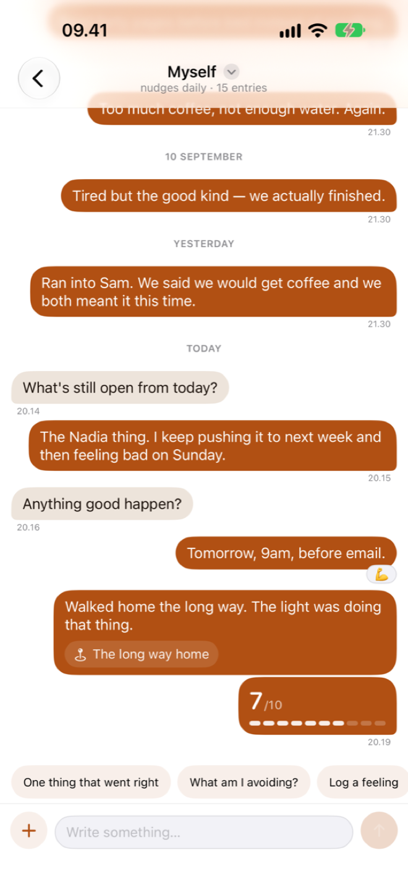
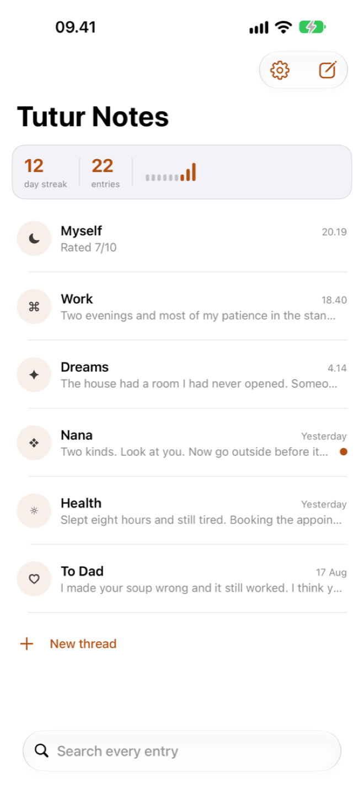
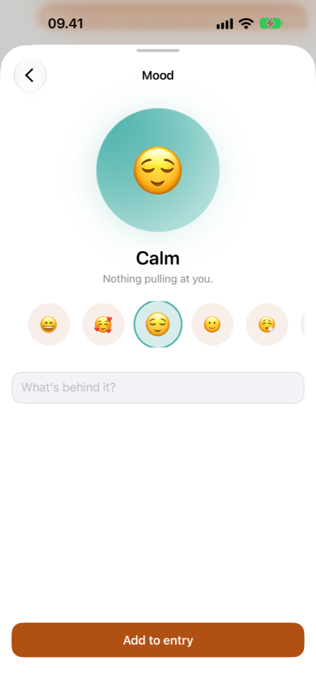
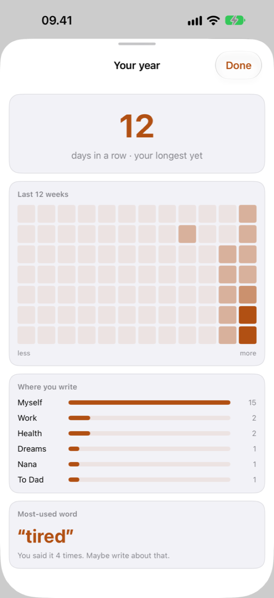
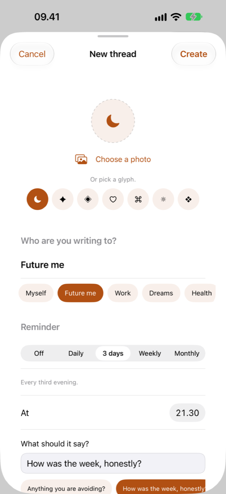

Threads, not entries
Name a thread after anything — a person, a project, a part of yourself. Give it an icon, and it sits in the list like a chat waiting for you.
No blank page. No prompts you ignore. Just a thread — and a keyboard you already know how to use.
No account. No ads. No analytics. Your journal stays on your device.

Work. Health. Dreams. Someone you miss. Each one is its own conversation, so you are never scrolling past the wrong month to find the right thought.
Open the thread, type the line, send. No title, no date picker, no mood wheel you have to answer first. It is the fastest thing on your home screen.
Miss a week and nothing scolds you. Reminders are off until you ask for them, and when you do, they say exactly what you wrote.
The whole app is built around one idea: the reason people stop journaling is that journals ask too much. This one asks for a sentence.
Name a thread after anything — a person, a project, a part of yourself. Give it an icon, and it sits in the list like a chat waiting for you.
Eight moods, from great to angry, attached to the moment rather than the day. Because "fine" is rarely the whole entry.
Add a photo, record up to five minutes of voice, or pin where you were. Location is only ever asked for on the tap that needs it.
One tap when words are too much. Ratings and moods feed the patterns you see later, so even a lazy entry counts.
A year at a glance, your last twelve weeks, the places you write from most, and the one word you keep reaching for.
A short question appears in the thread — "what am I avoiding?" — written by a person, not generated. Switch them off and they never come back.
Face ID, Touch ID or your passcode on every launch, plus a switch that hides entry previews in the thread list for shoulder-surfers.
Sync across your devices through your own private iCloud, or turn it off and keep the journal on one device. Both are one switch.
Your whole journal as plain text or JSON, in one tap. No export queue, no email link, no waiting — it is your writing.




Most journaling apps promise privacy and then run a server. Tutur Notes does not have one. There is no backend, no account to create, and no analytics SDK in the build — so your writing has no route off your device except the one you choose.
Yes. The current version has no in-app purchases and no subscription — every feature described on this page is included.
Paid features may be added in a future version. If that happens, anything you have already written stays yours and stays accessible, and the price will be shown to you before you are ever charged.
No, and you cannot make one. There is no sign-up screen because there is no server to sign up to. Open the app and start writing.
If iCloud sync is on, your journal restores with the rest of your iCloud data on a new device signed in to the same Apple Account.
If you turned sync off, the journal lives on that one device and is included in an encrypted iPhone backup, but nowhere else. We cannot recover it for you — we have never had a copy. Export to a file now and then if that worries you.
Any time, from Settings → Export everything. You get the whole
journal as a plain .txt file or as structured
.json, and you choose where it goes.
No. The prompts you occasionally see in a thread — "what am I avoiding?", "one thing that went right" — come from a fixed list written by a person. Nothing you write is sent to a language model, ours or anybody else's.
iPhone and iPad, on {{minimumOS}}. The layout adapts to the larger screen rather than stretching the phone version.
Write to {{supportEmail}} and a person answers — usually {{responseTime}}. There is more detail, including what to include so the reply is useful, on the support page.
It takes one sentence. Tonight's entry can be four words long and it still counts.